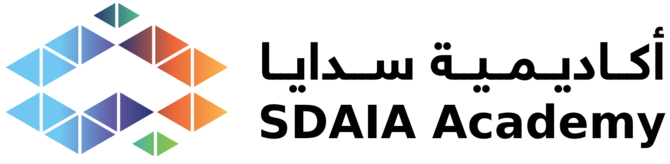

<!DOCTYPE html>
<html lang="ar" dir="rtl">
<head>
<meta charset="UTF-8" />
<meta name="viewport" content="width=device-width, initial-scale=1.0" />
<title>أكاديمية سدايا — المنظومة الوطنية لبناء القدرات في البيانات والذكاء الاصطناعي</title>
<meta name="description" content="أكاديمية سدايا: المنسّق الوطني لمنظومة تطوير القدرات في الذكاء الاصطناعي." />

<!-- Fonts (Arabic) -->
<link rel="preconnect" href="https://fonts.googleapis.com">
<link rel="preconnect" href="https://fonts.gstatic.com" crossorigin>
<link href="https://fonts.googleapis.com/css2?family=IBM+Plex+Sans+Arabic:wght@300;400;500;600;700&family=Tajawal:wght@500;700;800&display=swap" rel="stylesheet">

<!-- Tailwind Play CDN -->
<script src="https://cdn.tailwindcss.com"></script>
<script>
  tailwind.config = {
    theme: {
      extend: {
        fontFamily: {
          sans: ['"IBM Plex Sans Arabic"', 'ui-sans-serif', 'system-ui'],
          display: ['Tajawal', '"IBM Plex Sans Arabic"', 'ui-sans-serif'],
        },
        colors: {
          navy:  '#14233f',
          brand: { DEFAULT: '#1f6fb2', dark: '#16578d', deep: '#0f4c81' },
          teal:  { DEFAULT: '#14a08a', dark: '#0f7e6d' },
          leaf:  '#4faf57',
          amber: { DEFAULT: '#d9881f', dark: '#b86f12' },
          slate2:'#45516d',
          indigo2:'#5b5ea6',
          mist:  '#f4f8fc',
          hair:  '#e6eaf2',
        },
        boxShadow: {
          soft: '0 10px 40px -12px rgba(20,35,63,0.18)',
          glow: '0 0 0 1px rgba(31,111,178,0.10), 0 20px 60px -20px rgba(31,111,178,0.35)',
        }
      }
    }
  }
</script>

<style>
  :root{
    --navy:#14233f; --brand:#1f6fb2; --brand-dark:#16578d; --teal:#14a08a;
    --leaf:#4faf57; --amber:#d9881f; --slate2:#45516d; --indigo2:#5b5ea6;
  }
  html{scroll-behavior:smooth;}
  body{background:#ffffff;color:#14233f;-webkit-font-smoothing:antialiased;overflow-x:hidden;}
  ::selection{background:rgba(31,111,178,.18);}

  .glass{
    background:rgba(255,255,255,0.65);
    backdrop-filter:blur(16px) saturate(140%);
    -webkit-backdrop-filter:blur(16px) saturate(140%);
    border:1px solid rgba(255,255,255,0.7);
  }
  .glass-blue{
    background:linear-gradient(160deg, rgba(31,111,178,0.10), rgba(20,160,138,0.06));
    backdrop-filter:blur(14px);
    border:1px solid rgba(31,111,178,0.16);
  }

  .aurora{position:absolute;border-radius:9999px;filter:blur(70px);opacity:.5;pointer-events:none;}
  @keyframes floaty{0%,100%{transform:translate(0,0) scale(1)}50%{transform:translate(20px,-24px) scale(1.06)}}
  .floaty{animation:floaty 14s ease-in-out infinite;}
  .floaty2{animation:floaty 18s ease-in-out infinite reverse;}

  @keyframes ringpulse{0%{transform:scale(.75);opacity:.55}80%{opacity:0}100%{transform:scale(1.7);opacity:0}}
  .ring-pulse{animation:ringpulse 3.6s ease-out infinite;}

  @keyframes dashdraw{to{stroke-dashoffset:0;}}
  @keyframes flowdash{to{stroke-dashoffset:-32;}}

  .grid-bg{
    background-image:linear-gradient(rgba(31,111,178,.05) 1px,transparent 1px),
                     linear-gradient(90deg,rgba(31,111,178,.05) 1px,transparent 1px);
    background-size:44px 44px;
    -webkit-mask-image:radial-gradient(circle at 50% 45%,#000 55%,transparent 85%);
    mask-image:radial-gradient(circle at 50% 45%,#000 55%,transparent 85%);
  }

  @keyframes barpulse{0%,100%{transform:scaleY(.45)}50%{transform:scaleY(1)}}
  .bar{transform-origin:bottom;animation:barpulse 2.2s ease-in-out infinite;}

  /* بطاقة معلومات واضحة وعالية التباين */
  .info-card{
    background:rgba(255,255,255,0.98);
    backdrop-filter:blur(6px) saturate(140%);
    -webkit-backdrop-filter:blur(6px) saturate(140%);
  }

  /* بطاقات قابلة للقلب (Flip cards) */
  .flip{perspective:1100px;outline:none;border-radius:1rem;}
  .flip-inner{
    position:relative;width:100%;height:100%;
    transition:transform .6s cubic-bezier(.22,1,.36,1);
    transform-style:preserve-3d;
  }
  .flip:hover .flip-inner,
  .flip:focus-visible .flip-inner,
  .flip:focus-within .flip-inner{transform:rotateY(180deg);}
  .flip:focus-visible{box-shadow:0 0 0 3px rgba(31,111,178,.35);}
  .flip-face{
    position:absolute;inset:0;border-radius:1rem;overflow:hidden;
    backface-visibility:hidden;-webkit-backface-visibility:hidden;
  }
  .flip-back{transform:rotateY(180deg);}

  .no-scrollbar::-webkit-scrollbar{height:6px}
  .no-scrollbar::-webkit-scrollbar-thumb{background:rgba(31,111,178,.25);border-radius:9px}

  @media (prefers-reduced-motion: reduce){
    *{animation-duration:.001ms!important;animation-iteration-count:1!important;transition-duration:.001ms!important;}
    html{scroll-behavior:auto;}
  }
</style>

<script type="importmap">
{
  "imports": {
    "react": "https://esm.sh/react@18.3.1",
    "react-dom": "https://esm.sh/react-dom@18.3.1",
    "react-dom/client": "https://esm.sh/react-dom@18.3.1/client",
    "framer-motion": "https://esm.sh/framer-motion@11.3.19?deps=react@18.3.1,react-dom@18.3.1"
  }
}
</script>
<script src="https://unpkg.com/@babel/standalone@7.25.6/babel.min.js"></script>
</head>

<body>
<div id="root"></div>

<script type="text/babel" data-type="module" data-presets="react">
import React, { useState, useRef, useEffect } from "react";
import { createRoot } from "react-dom/client";
import { motion, AnimatePresence, useInView } from "framer-motion";

/* أرقام عربية */
const AR = (n) => String(n).replace(/[0-9]/g, (d) => "٠١٢٣٤٥٦٧٨٩"[d]);

/* ------------------------------------------------------------------ */
/* مجموعة الأيقونات (خطية موحّدة)                                       */
/* ------------------------------------------------------------------ */
const Icon = ({ name, className = "w-6 h-6", stroke = 1.6 }) => {
  const common = {
    className, viewBox: "0 0 24 24", fill: "none",
    stroke: "currentColor", strokeWidth: stroke,
    strokeLinecap: "round", strokeLinejoin: "round",
  };
  const P = {
    hub: <><circle cx="12" cy="12" r="2.4"/><circle cx="12" cy="3.4" r="1.6"/><circle cx="12" cy="20.6" r="1.6"/><circle cx="4.2" cy="7.6" r="1.6"/><circle cx="19.8" cy="7.6" r="1.6"/><circle cx="4.2" cy="16.4" r="1.6"/><circle cx="19.8" cy="16.4" r="1.6"/><path d="M12 5v4.6M12 14.4V19M6 8.4l3.9 2.4M18 8.4l-3.9 2.4M6 15.6l3.9-2.4M18 15.6l-3.9-2.4"/></>,
    cap: <><path d="M2.5 8.5 12 4l9.5 4.5L12 13 2.5 8.5Z"/><path d="M6 10.6V15c0 1.4 2.7 2.6 6 2.6s6-1.2 6-2.6v-4.4"/><path d="M21.5 8.5v4.2"/></>,
    present: <><rect x="3" y="4" width="18" height="12" rx="1.6"/><path d="M12 16v3M8.5 21.5 12 19l3.5 2.5"/><path d="M7.5 12.5 10 10l2 1.8 3.5-3.8"/></>,
    university: <><path d="M3 9.5 12 4l9 5.5"/><path d="M4.5 10v8M9 10v8M15 10v8M19.5 10v8"/><path d="M3 21h18M3.5 18.2h17"/></>,
    briefcase: <><rect x="3" y="7.5" width="18" height="12" rx="1.8"/><path d="M8.5 7.5V6a2 2 0 0 1 2-2h3a2 2 0 0 1 2 2v1.5"/><path d="M3 12.5h18M11 12h2v2h-2z"/></>,
    shield: <><path d="M12 3 5 6v5.5c0 4.2 2.9 7.5 7 9 4.1-1.5 7-4.8 7-9V6l-7-3Z"/><path d="m9.2 12 2 2 3.6-3.8"/></>,
    brain: <><path d="M9.5 4.5A2.5 2.5 0 0 0 7 7v.4A2.6 2.6 0 0 0 5.5 12 2.6 2.6 0 0 0 7 16.6V17a2.5 2.5 0 0 0 4.5 1.5V6A2.5 2.5 0 0 0 9.5 4.5Z"/><path d="M14.5 4.5A2.5 2.5 0 0 1 17 7v.4A2.6 2.6 0 0 1 18.5 12 2.6 2.6 0 0 1 17 16.6V17a2.5 2.5 0 0 1-4.5 1.5"/><path d="M12 9h2.2M12 13h2M9.8 11H8"/></>,
    arrow: <path d="M5 12h14M13 6l6 6-6 6"/>,
    spark: <><path d="M12 3v4M12 17v4M3 12h4M17 12h4M6 6l2.5 2.5M15.5 15.5 18 18M18 6l-2.5 2.5M8.5 15.5 6 18"/></>,
    target: <><circle cx="12" cy="12" r="8"/><circle cx="12" cy="12" r="3.4"/></>,
    flow: <><path d="M4 7h9M4 12h16M4 17h11"/><path d="M17 4l3 3-3 3"/></>,
    check: <path d="m5 12.5 4.2 4.2L19 7"/>,
    users: <><circle cx="9" cy="8" r="3"/><path d="M3.5 19a5.5 5.5 0 0 1 11 0"/><path d="M16 6.2a3 3 0 0 1 0 5.6M17.5 19a5.5 5.5 0 0 0-2.8-4.8"/></>,
    search: <><circle cx="11" cy="11" r="7"/><path d="m21 21-4.3-4.3"/><path d="m8.4 11 1.9 1.9 3.4-3.7"/></>,
    trend: <><path d="M3 17l6-6 4 4 8-8"/><path d="M15 7h6v6"/></>,
    refresh: <><path d="M3 12a9 9 0 0 1 15-6.7L21 8"/><path d="M21 3v5h-5"/><path d="M21 12a9 9 0 0 1-15 6.7L3 16"/><path d="M3 21v-5h5"/></>,
    radar: <><path d="M19.07 4.93A10 10 0 0 0 6.99 3.34"/><path d="M4 6h.01"/><path d="M2.29 9.62A10 10 0 1 0 21.31 8.35"/><path d="M16.24 7.76A6 6 0 1 1 8.23 7.75"/><path d="M12 18h.01"/><path d="M17.99 11.66A6 6 0 0 0 15.77 8.23"/><path d="M12 12h.01"/></>,
    ruler: <><path d="m15 5 4 4"/><path d="M13 7 8 2 2 8l5 5"/><path d="m14 6 6 6"/><path d="m4 16 4 4"/><path d="m17 11 5 5-6 6-5-5Z"/></>,
    play: <><rect x="3" y="3" width="18" height="18" rx="2"/><path d="m10 8 6 4-6 4Z"/></>,
    clipboard: <><rect x="8" y="2" width="8" height="4" rx="1"/><path d="M16 4h2a2 2 0 0 1 2 2v14a2 2 0 0 1-2 2H6a2 2 0 0 1-2-2V6a2 2 0 0 1 2-2h2"/><path d="m9 14 2 2 4-4"/></>,
    inbox: <><polyline points="22 12 16 12 14 15 10 15 8 12 2 12"/><path d="M5.45 5.11 2 12v6a2 2 0 0 0 2 2h16a2 2 0 0 0 2-2v-6l-3.45-6.89A2 2 0 0 0 16.76 4H7.24a2 2 0 0 0-1.79 1.11Z"/></>,
    activity: <path d="M22 12h-2.48a2 2 0 0 0-1.93 1.46l-2.35 8.36a.25.25 0 0 1-.48 0L9.24 2.18a.25.25 0 0 0-.48 0l-2.35 8.36A2 2 0 0 1 4.49 12H2"/>,
    badge: <><path d="M3.85 8.62a4 4 0 0 1 4.78-4.77 4 4 0 0 1 6.74 0 4 4 0 0 1 4.78 4.78 4 4 0 0 1 0 6.74 4 4 0 0 1-4.77 4.78 4 4 0 0 1-6.75 0 4 4 0 0 1-4.78-4.77 4 4 0 0 1 0-6.76Z"/><path d="m9 12 2 2 4-4"/></>,
    route: <><circle cx="6" cy="19" r="3"/><path d="M9 19h8.5a3.5 3.5 0 0 0 0-7h-11a3.5 3.5 0 0 1 0-7H15"/><circle cx="18" cy="5" r="3"/></>,
    package: <><path d="m16 16 2 2 4-4"/><path d="M21 10V8a2 2 0 0 0-1-1.73l-7-4a2 2 0 0 0-2 0l-7 4A2 2 0 0 0 3 8v8a2 2 0 0 0 1 1.73l7 4a2 2 0 0 0 2 0l2-1.14"/><path d="M3.3 7 12 12l8.7-5"/><path d="M12 22V12"/></>,
    barchart: <><path d="M3 3v18h18"/><path d="M18 17V9"/><path d="M13 17V5"/><path d="M8 17v-3"/></>,
    award: <><circle cx="12" cy="8" r="6"/><path d="m15.477 12.89 1.515 8.526a.5.5 0 0 1-.81.47l-3.58-2.687a1 1 0 0 0-1.197 0l-3.586 2.686a.5.5 0 0 1-.81-.469l1.514-8.526"/></>,
    sparkles: <><path d="M9.94 15.5A2 2 0 0 0 8.5 14.06l-6.14-1.58a.5.5 0 0 1 0-.96L8.5 9.94A2 2 0 0 0 9.94 8.5l1.58-6.14a.5.5 0 0 1 .96 0l1.58 6.14a2 2 0 0 0 1.44 1.44l6.14 1.58a.5.5 0 0 1 0 .96l-6.14 1.58a2 2 0 0 0-1.44 1.44l-1.58 6.14a.5.5 0 0 1-.96 0Z"/><path d="M20 3v4M22 5h-4M4 17v2M5 18H3"/></>,
    settings: <><circle cx="12" cy="12" r="3"/><path d="M19.4 15a1.65 1.65 0 0 0 .33 1.82l.06.06a2 2 0 1 1-2.83 2.83l-.06-.06a1.65 1.65 0 0 0-1.82-.33 1.65 1.65 0 0 0-1 1.51V21a2 2 0 0 1-4 0v-.09A1.65 1.65 0 0 0 9 19.4a1.65 1.65 0 0 0-1.82.33l-.06.06a2 2 0 1 1-2.83-2.83l.06-.06a1.65 1.65 0 0 0 .33-1.82 1.65 1.65 0 0 0-1.51-1H3a2 2 0 0 1 0-4h.09A1.65 1.65 0 0 0 4.6 9a1.65 1.65 0 0 0-.33-1.82l-.06-.06a2 2 0 1 1 2.83-2.83l.06.06a1.65 1.65 0 0 0 1.82.33H9a1.65 1.65 0 0 0 1-1.51V3a2 2 0 0 1 4 0v.09a1.65 1.65 0 0 0 1 1.51 1.65 1.65 0 0 0 1.82-.33l.06-.06a2 2 0 1 1 2.83 2.83l-.06.06a1.65 1.65 0 0 0-.33 1.82V9a1.65 1.65 0 0 0 1.51 1H21a2 2 0 0 1 0 4h-.09a1.65 1.65 0 0 0-1.51 1Z"/></>,
    layers: <><path d="M12.83 2.18a2 2 0 0 0-1.66 0L2.6 6.08a1 1 0 0 0 0 1.83l8.58 3.91a2 2 0 0 0 1.66 0l8.58-3.91a1 1 0 0 0 0-1.83Z"/><path d="m22 12.5-9.17 4.17a2 2 0 0 1-1.66 0L2 12.5"/><path d="m22 17.5-9.17 4.17a2 2 0 0 1-1.66 0L2 17.5"/></>,
  };
  return <svg {...common}>{P[name] || P.hub}</svg>;
};

/* ------------------------------------------------------------------ */
/* بيانات المنظومة                                                     */
/* ------------------------------------------------------------------ */
const CENTER = {
  title: "أكاديمية سدايا",
  role: "المنسّق الوطني",
  responsibilities: [
    { t: "مواءمة أصحاب المصلحة في المنظومة", icon: "hub" },
    { t: "تحديد الأولويات التدريبية الوطنية", icon: "target" },
    { t: "ضمان الجودة", icon: "shield" },
    { t: "تنسيق التنفيذ", icon: "settings" },
    { t: "إدارة رحلات المتدربين", icon: "route" },
    { t: "ربط العرض بالطلب في سوق العمل", icon: "briefcase" },
    { t: "قياس الأثر الوطني", icon: "trend" },
  ],
};

const NODES = [
  {
    id: "learners", title: "المتدربون", icon: "cap", color: "#1f6fb2",
    tag: "أفراد وجهات",
    purpose: "الأفراد والجهات الذين يبنون قدرات الذكاء الاصطناعي ويحوّلونها إلى قيمة مهنية ومؤسسية.",
    who: [
      { t: "حديثو التخرج", icon: "cap" },
      { t: "الجهات الحكومية", icon: "university" },
      { t: "جهات القطاع الخاص", icon: "briefcase" },
      { t: "المختصون", icon: "badge" },
    ],
    responsibilities: ["التسجيل في البرامج", "بناء المهارات", "الحصول على الشهادات", "تطوير المسار المهني"],
    inputs: ["مسارات تعلّم مصمَّمة", "برامج معتمدة", "إرشاد مهني"],
    outputs: ["كوادر مؤهَّلة", "شهادات مكتسَبة", "بيانات تقدّم التعلّم"],
    relationship: "تصمّم أكاديمية سدايا رحلة المتدرب وتديرها من بدايتها إلى نهايتها، وتربط كل متدرب بالمسار المناسب وتقيس المخرجات مقابل الأهداف الوطنية للقوى العاملة.",
  },
  {
    id: "trainers", title: "المدربون المعتمدون", icon: "present", color: "#14a08a",
    tag: "خبرة التنفيذ",
    purpose: "خبراء معتمدون ينفّذون التدريب وينقلون الخبرة التطبيقية في الذكاء الاصطناعي على مستوى وطني.",
    who: [
      { t: "خبراء معتمدون في المجال", icon: "badge" },
      { t: "مدربو الأكاديمية", icon: "present" },
      { t: "أعضاء هيئة التدريس", icon: "university" },
      { t: "مختصون من السوق", icon: "briefcase" },
    ],
    responsibilities: ["تنفيذ التدريب", "نقل الخبرة", "الحفاظ على جودة التدريب", "الالتزام بمعايير الاعتماد"],
    inputs: ["معايير الاعتماد", "المناهج والمواد التدريبية", "مجموعات المتدربين"],
    outputs: ["تنفيذ عالي الجودة", "تغذية راجعة تدريبية", "تقييمات للمهارات"],
    relationship: "تعتمد الأكاديمية المدربين وتزوّدهم وتوحّد معاييرهم؛ لتضمن اتساق جودة التنفيذ وقابليته للقياس عبر المنظومة.",
  },
  {
    id: "universities", title: "جامعات ومعاهد وأكاديميات", icon: "university", color: "#5b5ea6",
    tag: "شركاء تنفيذ استراتيجيون",
    purpose: "شركاء استراتيجيون يشاركون في تطوير المناهج والبحث والبرامج المشتركة لتعميق قاعدة الكوادر الوطنية.",
    who: [
      { t: "جامعات", icon: "university" },
      { t: "مراكز تدريبية", icon: "present" },
      { t: "معاهد", icon: "layers" },
      { t: "شركاء", icon: "users" },
    ],
    responsibilities: ["شراكات تنفيذ استراتيجية", "تطوير المناهج", "التعاون البحثي", "خبراء المجال", "برامج مشتركة"],
    inputs: ["الأولويات التدريبية الوطنية", "أطر الاعتماد", "ذكاء المهارات"],
    outputs: ["برامج مشتركة", "بحوث ومناهج", "خريجون مؤهَّلون"],
    relationship: "تنسّق أكاديمية سدايا الشراكات وتواءم التنفيذ الأكاديمي مع الأولويات الوطنية ومعايير الجودة.",
  },
  {
    id: "labor", title: "جهات سوق العمل", icon: "briefcase", color: "#d9881f",
    tag: "القطاعان الحكومي والخاص",
    purpose: "جهات التوظيف التي تعكس الطلب الحقيقي على القوى العاملة وتستوعب الخريجين في أدوار منتجة.",
    who: [
      { t: "أذرع سدايا", icon: "hub" },
      { t: "الجهات الحكومية", icon: "university" },
      { t: "جهات القطاع الخاص", icon: "briefcase" },
    ],
    responsibilities: ["تحديد الطلب على القوى العاملة", "تحديد فجوات القدرات", "توفير التدريب التعاوني", "توظيف الخريجين", "قياس الأثر على القوى العاملة"],
    inputs: ["خريجون جاهزون للعمل", "بيانات عرض المهارات", "روافد المواهب"],
    outputs: ["إشارات الطلب", "فجوات القدرات", "تدريب تعاوني ووظائف", "أدلة الأثر"],
    relationship: "تترجم الأكاديمية طلب جهات التوظيف إلى أولويات تدريبية، وتغلق الحلقة بقياس الأثر على القوى العاملة.",
  },
  {
    id: "accreditation", title: "منظومة الاعتماد", icon: "shield", color: "#4faf57",
    tag: "الجودة والشهادات",
    purpose: "الجهات التي تعتمد البرامج وتصادق على الشهادات وفق معايير التأهيل الوطنية.",
    who: [
      { t: "الإطار الوطني للمعايير المهنية", icon: "shield" },
      { t: "الإطار الأكاديمي السعودي لمؤهلات تخصصات البيانات والذكاء الاصطناعي", icon: "award" },
      { t: "الإطار الوطني للمعايير التدريبية في البيانات والذكاء الاصطناعي", icon: "badge" },
    ],
    responsibilities: ["اعتماد البرامج", "المصادقة على الشهادات", "المواءمة مع الإطار الوطني للمؤهلات", "ضمان الجودة"],
    inputs: ["البرامج والمناهج", "أدلة التنفيذ", "بيانات التقييم"],
    outputs: ["برامج معتمدة", "شهادات مصادَق عليها", "ضمان الجودة"],
    relationship: "تُضمّن أكاديمية سدايا الاعتماد في كل برنامج؛ لتكون الشهادات موثوقة وقابلة للنقل ومعترَفاً بها وطنياً.",
  },
  {
    id: "intelligence", title: "دراسة الاحتياج", icon: "brain", color: "#16578d",
    tag: "مصادر تحديد الاحتياج الوطني", chart: true,
    purpose: "الأساس المبني على الأدلة الذي يقرأ الاحتياجات الوطنية وأولويات الجهات ليحدّد المهارات التي تحتاجها البلاد مستقبلاً.",
    who: [
      { t: "الاحتياجات الحكومية والوطنية ذات الأولوية", icon: "target" },
      { t: "احتياجات أذرع سدايا والأجهزة التقنية", icon: "hub" },
      { t: "تقارير ودراسات مكتب الاستراتيجية", icon: "clipboard" },
      { t: "تقارير السوق والشركاء والاتجاهات العالمية", icon: "trend" },
    ],
    responsibilities: ["تحليل بيانات سوق العمل", "تحديد المهارات المستقبلية", "رصد فجوات القدرات", "التنبؤ باحتياجات القوى العاملة المستقبلية", "دعم القرار المبني على الأدلة"],
    inputs: ["بيانات سوق العمل", "إشارات طلب جهات التوظيف", "بيانات التعلّم والمخرجات"],
    outputs: ["تنبؤات المهارات المستقبلية", "تحليلات الفجوات", "أدلة لاتخاذ القرار"],
    relationship: "يتدفق الذكاء إلى الأكاديمية بوصفه قاعدة الأدلة لتحديد الأولويات التدريبية الوطنية وتوجيه المنظومة بأكملها.",
  },
];

/* الهندسة: سداسي حول المركز — مشترك بين SVG والنسب المئوية */
const VBW = 1000, VBH = 820, CX = 500, CY = 400, RX = 372, RY = 300;
const ANGLES = [-90, -30, 30, 90, 150, 210];
const positioned = NODES.map((n, i) => {
  const a = (ANGLES[i] * Math.PI) / 180;
  const sx = CX + RX * Math.cos(a);
  const sy = CY + RY * Math.sin(a);
  return { ...n, sx, sy, leftPct: (sx / VBW) * 100, topPct: (sy / VBH) * 100 };
});

/* ------------------------------------------------------------------ */
const Reveal = ({ children, delay = 0, y = 24, className = "" }) => {
  const ref = useRef(null);
  const inView = useInView(ref, { once: true, margin: "-60px" });
  return (
    <motion.div ref={ref} className={className}
      initial={{ opacity: 0, y }}
      animate={inView ? { opacity: 1, y: 0 } : {}}
      transition={{ duration: 0.7, delay, ease: [0.22, 1, 0.36, 1] }}>
      {children}
    </motion.div>
  );
};

const MiniChart = ({ color = "#16578d", className = "" }) => (
  <svg viewBox="0 0 60 34" className={className}>
    {[6, 16, 26, 36, 46].map((x, i) => (
      <rect key={i} x={x} y="6" width="7" height="24" rx="1.6"
        fill={color} opacity={0.85 - i * 0.05}
        className="bar" style={{ animationDelay: `${i * 0.22}s`, transformBox: "fill-box" }} />
    ))}
    <path d="M3 30 L15 20 L27 24 L39 12 L57 4" fill="none" stroke={color} strokeWidth="1.6" strokeLinecap="round" opacity="0.9"/>
  </svg>
);

/* ------------------------------------------------------------------ */
/* الشريط العلوي                                                       */
/* ------------------------------------------------------------------ */
const Nav = () => (
  <header className="fixed top-0 inset-x-0 z-40">
    <div className="glass border-b border-white/60">
      <div className="max-w-7xl mx-auto px-5 sm:px-8 h-16 flex items-center justify-between">
        
        <nav className="hidden md:flex items-center gap-8 text-sm font-medium text-slate2">
          <a href="#network" className="hover:text-brand transition">المنظومة</a>
          <a href="#flow" className="hover:text-brand transition">النموذج التشغيلي</a>
          <a href="#tracks" className="hover:text-brand transition">المسارات المهنية</a>
        </nav>
        <div className="flex items-center gap-3">
          <a href="index.html" className="hidden sm:inline-flex text-xs font-semibold text-slate2 hover:text-brand transition border border-hair rounded-full px-3 py-1.5">EN</a>
          <a href="#network" className="group inline-flex items-center gap-2 rounded-full bg-brand text-white text-sm font-semibold px-4 sm:px-5 py-2 shadow-glow hover:bg-brand-dark transition">
            استكشف <Icon name="arrow" className="w-4 h-4 -scale-x-100 group-hover:-translate-x-0.5 transition-transform" />
          </a>
        </div>
      </div>
    </div>
  </header>
);

/* ------------------------------------------------------------------ */
/* القسم الرئيسي                                                       */
/* ------------------------------------------------------------------ */
const Hero = () => (
  <section className="relative pt-32 sm:pt-40 pb-16 sm:pb-24 overflow-hidden">
    <div className="absolute inset-0 grid-bg" />
    <div className="aurora floaty w-[38rem] h-[38rem] -top-40 -left-24" style={{background:"radial-gradient(circle,#1f6fb2,transparent 60%)"}} />
    <div className="aurora floaty2 w-[32rem] h-[32rem] top-20 -right-32" style={{background:"radial-gradient(circle,#14a08a,transparent 60%)"}} />

    <div className="relative max-w-5xl mx-auto px-6 text-center">
      <Reveal>
        <span className="inline-flex items-center gap-2 rounded-full glass-blue px-4 py-1.5 text-xs sm:text-sm font-semibold text-brand-dark tracking-wide">
          <Icon name="hub" className="w-4 h-4" /> نموذج تشغيلي جديد
        </span>
      </Reveal>
      <Reveal delay={0.08}>
        <h1 className="mt-6 font-display font-extrabold tracking-tight text-navy leading-[1.15] text-3xl sm:text-5xl">
          المنظومة الوطنية لبناء القدرات<br className="hidden sm:block" /> في البيانات والذكاء الاصطناعي
        </h1>
      </Reveal>
      <Reveal delay={0.16}>
        <p className="mt-6 mx-auto max-w-3xl text-slate2 text-base sm:text-lg leading-relaxed">
          تُنسّق أكاديمية سدايا المنظومة الوطنية لتطوير القدرات عبر ربط احتياجات سوق العمل،
          وجهات التدريب، والاعتماد، والمتدربين، ودراسة الاحتياج؛ لتحقيق مخرجات قوى عاملة
          قابلة للقياس.
        </p>
      </Reveal>
      <Reveal delay={0.24}>
        <div className="mt-9 flex flex-col sm:flex-row items-center justify-center gap-3">
          <a href="#network" className="group inline-flex items-center gap-2 rounded-full bg-brand text-white font-semibold px-7 py-3.5 shadow-glow hover:bg-brand-dark transition">
            استكشف المنظومة
            <Icon name="arrow" className="w-5 h-5 -scale-x-100 group-hover:-translate-x-1 transition-transform" />
          </a>
          <a href="#tracks" className="inline-flex items-center gap-2 rounded-full border border-hair text-slate2 font-semibold px-7 py-3.5 hover:border-brand hover:text-brand transition">
            المسارات المهنية
          </a>
        </div>
      </Reveal>
      <Reveal delay={0.32}>
        <p className="mt-10 text-xs tracking-[0.15em] text-slate2/70">
          من جهة تدريب &nbsp;←&nbsp; إلى منسّق وطني
        </p>
      </Reveal>
    </div>
  </section>
);

/* ------------------------------------------------------------------ */
/* شبكة المنظومة التفاعلية                                             */
/* ------------------------------------------------------------------ */
const NetworkSection = ({ onSelect }) => {
  const [hover, setHover] = useState(null);
  const ref = useRef(null);
  const inView = useInView(ref, { once: true, margin: "-100px" });

  return (
    <section id="network" className="relative py-16 sm:py-24">
      <div className="max-w-3xl mx-auto px-6 text-center mb-8">
        <Reveal>
          <p className="text-brand font-semibold tracking-wide text-sm">المنظومة</p>
          <h2 className="mt-3 font-display font-bold text-navy text-3xl sm:text-4xl">شبكة واحدة متصلة، ومنسّق واحد</h2>
          <p className="mt-4 text-slate2">مرّر المؤشر فوق أي شريك لترى كيف تتدفق القيمة نحو الأكاديمية، واختر أي عقدة لعرض الصورة الكاملة.</p>
        </Reveal>
      </div>

      <div ref={ref} className="relative max-w-5xl mx-auto px-4">
        <div className="relative w-full mx-auto" style={{ aspectRatio: "1000 / 820", maxWidth: "980px" }}>

          {/* طبقة الروابط SVG */}
          <svg viewBox={`0 0 ${VBW} ${VBH}`} className="absolute inset-0 w-full h-full" aria-hidden="true">
            <defs>
              {positioned.map((n) => (
                <linearGradient key={n.id} id={`grad-${n.id}`} x1="0" y1="0" x2="1" y2="0">
                  <stop offset="0%" stopColor={n.color} />
                  <stop offset="100%" stopColor="#1f6fb2" />
                </linearGradient>
              ))}
              <radialGradient id="huvGlow" cx="50%" cy="50%" r="50%">
                <stop offset="0%" stopColor="#1f6fb2" stopOpacity="0.18" />
                <stop offset="100%" stopColor="#1f6fb2" stopOpacity="0" />
              </radialGradient>
            </defs>

            <circle cx={CX} cy={CY} r="230" fill="url(#huvGlow)" />

            {positioned.map((n, i) => {
              const active = hover === n.id;
              const dim = hover && hover !== n.id && hover !== "center";
              const pathId = `path-${n.id}`;
              return (
                <g key={n.id} style={{ opacity: dim ? 0.12 : 1, transition: "opacity .35s" }}>
                  <path id={pathId} d={`M ${n.sx} ${n.sy} L ${CX} ${CY}`}
                    fill="none" stroke={`url(#grad-${n.id})`}
                    strokeWidth={active ? 3.4 : 1.8}
                    strokeLinecap="round"
                    strokeDasharray="7 7"
                    style={{
                      strokeDashoffset: 400,
                      animation: inView ? `dashdraw 1.1s ${0.15 + i * 0.12}s ease-out forwards, flowdash 1.1s linear infinite` : "none",
                      transition: "stroke-width .3s",
                    }} />
                  {[0, 1, 2].map((k) => (
                    <circle key={k} r={active ? 4 : 3} fill={n.color}>
                      <animateMotion dur={`${2.6 + k * 0.5}s`} begin={`${0.6 + k * 0.8}s`} repeatCount="indefinite" keyPoints="0;1" keyTimes="0;1" calcMode="linear">
                        <mpath href={`#${pathId}`} />
                      </animateMotion>
                      <animate attributeName="opacity" values="0;1;1;0" dur={`${2.6 + k * 0.5}s`} begin={`${0.6 + k * 0.8}s`} repeatCount="indefinite" />
                    </circle>
                  ))}
                </g>
              );
            })}
          </svg>

          {/* المركز */}
          <button
            onClick={() => onSelect("center")}
            onMouseEnter={() => setHover("center")} onMouseLeave={() => setHover(null)}
            className="group absolute -translate-x-1/2 -translate-y-1/2 z-20 focus:outline-none"
            style={{ left: "50%", top: `${(CY / VBH) * 100}%` }}
            aria-label="أكاديمية سدايا — المنسّق الوطني">
            <span className="absolute inset-0 rounded-full ring-pulse" style={{ boxShadow: "0 0 0 2px rgba(31,111,178,.4)" }} />
            <span className="absolute inset-0 rounded-full ring-pulse" style={{ boxShadow: "0 0 0 2px rgba(20,160,138,.35)", animationDelay: "1.2s" }} />
            <motion.div
              initial={{ scale: 0.6, opacity: 0 }} animate={inView ? { scale: 1, opacity: 1 } : {}}
              transition={{ duration: 0.7, ease: [0.22, 1, 0.36, 1] }}
              whileHover={{ scale: 1.05 }}
              className="relative grid place-items-center rounded-full glass shadow-glow border border-white"
              style={{
                width: "clamp(150px, 25vw, 224px)", height: "clamp(150px, 25vw, 224px)",
                background: "radial-gradient(circle at 50% 35%, #ffffff, #eef4fb)",
              }}>
              
              <span className="font-display font-bold text-navy leading-tight text-[clamp(13px,2.2vw,18px)]">أكاديمية سدايا</span>
              <span className="mt-1 rounded-full bg-brand/10 text-brand-dark font-semibold px-2.5 py-0.5 text-[clamp(10px,1.6vw,12px)]">المنسّق الوطني</span>
            </motion.div>
          </button>

          {/* العقد المحيطة */}
          {positioned.map((n, i) => {
            const active = hover === n.id;
            const dim = hover && hover !== n.id;
            return (
              <div key={n.id} className="absolute -translate-x-1/2 -translate-y-1/2 z-10"
                style={{ left: `${n.leftPct}%`, top: `${n.topPct}%` }}>
                <motion.button
                  onClick={() => onSelect(n.id)}
                  onMouseEnter={() => setHover(n.id)} onMouseLeave={() => setHover(null)}
                  initial={{ scale: 0.4, opacity: 0 }}
                  animate={inView ? { scale: 1, opacity: dim ? 0.4 : 1 } : {}}
                  transition={{ duration: 0.55, delay: 0.25 + i * 0.1, ease: [0.22, 1, 0.36, 1] }}
                  whileHover={{ y: -4, scale: 1.05 }}
                  className="group relative grid place-items-center rounded-2xl glass border border-white/70 shadow-soft focus:outline-none focus:ring-2 focus:ring-brand/40"
                  style={{ width: "clamp(92px, 15vw, 136px)", height: "clamp(92px, 15vw, 136px)", padding: "8px" }}
                  aria-label={n.title}>
                  <span className="grid place-items-center rounded-xl mb-1"
                    style={{ width: "clamp(34px,6vw,46px)", height: "clamp(34px,6vw,46px)", color: n.color, background: `${n.color}14` }}>
                    <Icon name={n.icon} className="w-[58%] h-[58%]" />
                  </span>
                  <span className="text-navy font-semibold leading-tight text-center text-[clamp(9px,1.6vw,12px)] px-0.5">
                    {n.title.length > 20 ? n.title.split(" ").slice(0, 2).join(" ") + "…" : n.title}
                  </span>
                  {n.chart && (
                    <span className="absolute -bottom-1.5 left-1.5 rounded-md bg-white/90 shadow-soft p-0.5">
                      <MiniChart color={n.color} className="w-8 h-5" />
                    </span>
                  )}
                  <span className="absolute -top-1.5 -left-1.5 grid place-items-center w-5 h-5 rounded-full text-white text-[11px] leading-none shadow-soft"
                    style={{ background: n.color }}>+</span>
                </motion.button>

                {/* بطاقة معلومات عائمة عند التمرير */}
                <AnimatePresence>
                  {active && (
                    <motion.div
                      initial={{ opacity: 0, y: 8, scale: 0.96 }}
                      animate={{ opacity: 1, y: 0, scale: 1 }}
                      exit={{ opacity: 0, y: 6, scale: 0.96 }}
                      transition={{ duration: 0.22 }}
                      className="absolute left-1/2 -translate-x-1/2 top-[105%] mt-2 w-60 z-30 pointer-events-none"
                    >
                      <div className="info-card rounded-xl shadow-glow border border-hair p-4 text-right">
                        <div className="flex items-center gap-2 mb-1.5">
                          <span className="w-2 h-2 rounded-full" style={{ background: n.color }} />
                          <span className="text-[11px] font-semibold" style={{ color: n.color }}>{n.tag}</span>
                        </div>
                        <p className="font-display font-bold text-navy text-sm leading-snug">{n.title}</p>
                        <p className="mt-1.5 text-xs text-slate2 leading-relaxed">{n.purpose}</p>
                        <p className="mt-2 inline-flex items-center gap-1 text-[11px] font-semibold text-brand">
                          البيانات تتدفق نحو الأكاديمية <Icon name="arrow" className="w-3 h-3 -scale-x-100" />
                        </p>
                      </div>
                    </motion.div>
                  )}
                </AnimatePresence>
              </div>
            );
          })}
        </div>

        {/* وسيلة الإيضاح */}
        <div className="mt-4 flex flex-wrap items-center justify-center gap-x-5 gap-y-2 text-xs text-slate2">
          <span className="inline-flex items-center gap-1.5"><span className="w-6 border-t-2 border-dashed border-brand"/> رابط التنسيق</span>
          <span className="inline-flex items-center gap-1.5"><span className="w-2 h-2 rounded-full bg-brand animate-pulse"/> قيمة تتدفق نحو الأكاديمية</span>
          <span className="inline-flex items-center gap-1.5"><span className="w-3 h-3 rounded-full text-white bg-brand grid place-items-center text-[9px] leading-none">+</span> انقر للتفاصيل</span>
        </div>
      </div>
    </section>
  );
};

/* ------------------------------------------------------------------ */
/* اللوحة الجانبية                                                     */
/* ------------------------------------------------------------------ */
const Field = ({ label, items, color }) => (
  <div>
    <p className="text-[11px] font-semibold text-slate2/80 mb-2">{label}</p>
    <ul className="space-y-1.5">
      {items.map((it, i) => (
        <li key={i} className="flex items-start gap-2 text-sm text-navy">
          <span className="mt-1.5 w-1.5 h-1.5 rounded-full shrink-0" style={{ background: color }} />
          <span className="leading-snug">{it}</span>
        </li>
      ))}
    </ul>
  </div>
);

const SidePanel = ({ selected, onClose }) => {
  const isCenter = selected === "center";
  const node = isCenter ? null : positioned.find((n) => n.id === selected);
  const open = !!selected;
  const color = isCenter ? "#1f6fb2" : node?.color;

  useEffect(() => {
    const onKey = (e) => e.key === "Escape" && onClose();
    if (open) window.addEventListener("keydown", onKey);
    return () => window.removeEventListener("keydown", onKey);
  }, [open, onClose]);

  return (
    <AnimatePresence>
      {open && (
        <>
          <motion.div className="fixed inset-0 z-50 bg-navy/40 backdrop-blur-sm"
            initial={{ opacity: 0 }} animate={{ opacity: 1 }} exit={{ opacity: 0 }}
            onClick={onClose} />
          <motion.aside
            role="dialog" aria-modal="true" aria-label={isCenter ? CENTER.title : node.title}
            className="fixed left-0 top-0 z-50 h-full w-full sm:w-[440px] bg-white shadow-2xl overflow-y-auto"
            initial={{ x: "-100%" }} animate={{ x: 0 }} exit={{ x: "-100%" }}
            transition={{ type: "spring", stiffness: 260, damping: 30 }}>

            <div className="h-1.5 w-full" style={{ background: `linear-gradient(90deg, ${color}, #1f6fb2)` }} />
            <div className="p-6 sm:p-8">
              <div className="flex items-start justify-between gap-4">
                <div className="flex items-center gap-3">
                  <span className="grid place-items-center w-12 h-12 rounded-xl shrink-0" style={{ color, background: `${color}14` }}>
                    <Icon name={isCenter ? "hub" : node.icon} className="w-7 h-7" />
                  </span>
                  <div>
                    <p className="text-[11px] font-semibold" style={{ color }}>
                      {isCenter ? "المنسّق الوطني" : node.tag}
                    </p>
                    <h3 className="font-display font-bold text-navy text-lg leading-tight">
                      {isCenter ? CENTER.title : node.title}
                    </h3>
                  </div>
                </div>
                <button onClick={onClose} aria-label="إغلاق"
                  className="shrink-0 grid place-items-center w-9 h-9 rounded-full border border-hair text-slate2 hover:bg-mist transition">✕</button>
              </div>

              <ul className="mt-7 space-y-2.5">
                {(isCenter ? CENTER.responsibilities : node.who).map((w, i) => (
                  <li key={i} className="flex items-center gap-3 rounded-xl border border-hair bg-mist/40 px-4 py-3">
                    <span className="grid place-items-center w-11 h-11 rounded-xl shrink-0" style={{ color, background: `${color}14` }}>
                      <Icon name={w.icon} className="w-6 h-6" />
                    </span>
                    <span className="text-navy font-semibold text-[15px] leading-snug">{w.t}</span>
                  </li>
                ))}
              </ul>
            </div>
          </motion.aside>
        </>
      )}
    </AnimatePresence>
  );
};

/* ------------------------------------------------------------------ */
/* النموذج التشغيلي — دورة حياة البرامج التدريبية (سبع مراحل بالتفصيل)   */
/* ------------------------------------------------------------------ */
const FLOW = [
  { key: "needs", label: "رصد الاحتياج", en: "Needs Sensing", icon: "radar", color: "#1f6fb2",
    desc: "نرصد إشارات الطلب الحقيقية من سدايا وأذرعها والسوق، ونحوّلها إلى احتياج تدريبي معتمد.",
    inputs: ["الأولويات الحكومية والوطنية", "احتياجات أذرع سدايا", "تقارير السوق والشركاء"],
    activities: ["تحليل الاتجاهات العالمية", "ورش ومقابلات منظّمة", "تحليل الوظائف وفق الجدارات"],
    outIcon: "badge", outcome: "احتياج تدريبي معتمد وقابل للقياس" },
  { key: "gap", label: "دراسة الفجوة", en: "Gap Analysis", icon: "search", color: "#14a08a",
    desc: "نحوّل الفجوة بين الواقع والمستهدف إلى تقرير ومصفوفة مهارات مرتّبة بالأولوية.",
    activities: ["قياس الفجوة بين الواقع والمستهدف", "تحديد النضج الرقمي", "ترتيب الأولويات بالأثر والإلحاح"],
    outIcon: "route", outcome: "خارطة أولويات مبنية على الأدلة" },
  { key: "design", label: "التصميم والتطوير", en: "Design & Development", icon: "ruler", color: "#d9881f",
    desc: "نصمّم التجربة بالبيانات، ونطوّر المحتوى بالذكاء الاصطناعي، حتى نصل إلى حقيبة تدريبية متكاملة.",
    model: { name: "ADDIE", steps: ["تحليل", "تصميم", "تطوير", "تطبيق", "تقويم"] },
    bloom: true,
    activities: ["تصميم أهداف التعلّم وفق تصنيف بلوم", "إنتاج المحتوى بالذكاء الاصطناعي والمحاكاة", "تهيئة بيئة التدريب"],
    outIcon: "package", outcome: "حقيبة معتمدة جاهزة للإطلاق" },
  { key: "deliver", label: "التقديم والتنفيذ", en: "Delivery & Execution", icon: "play", color: "#5b5ea6", hub: true,
    desc: "نستقطب المتدربين وننفّذ التدريب بجودة معتمدة عبر ثلاثة مسارات متكاملة.",
    grid: [
      { icon: "sparkles", t: "منصة أذكىX", d: "الاستقطاب والتسجيل" },
      { icon: "cap", t: "التنفيذ عبر المدربين والشركاء", d: "جامعات ومعاهد وأكاديميات" },
      { icon: "settings", t: "العمليات المشتركة والحوكمة", d: "جودة موحّدة عبر جميع القنوات" },
    ],
    outIcon: "barchart", outcome: "تنفيذ عالي الجودة موثّق بالبيانات" },
  { key: "eval", label: "التقييم", en: "Evaluation", icon: "clipboard", color: "#1f6fb2",
    desc: "نقيس الرضا والمعرفة وجودة التنفيذ عبر تقارير مباشرة تُغذّي قياس الأثر والتحسين.",
    activities: ["قياس الرضا عبر مؤشر NPS", "قياس اكتساب المعرفة (قبلي/بعدي)", "تقييم جودة المدرب والمحتوى"],
    outIcon: "award", outcome: "شهادات صادرة ومؤشرات موثّقة" },
  { key: "impact", label: "قياس الأثر", en: "Impact Measurement", icon: "trend", color: "#0f7e6d",
    desc: "نقيس تطبيق المهارات في بيئة العمل والعائد المهني عبر تقرير أثر شامل وتوصيات تطوير.",
    activities: ["قياس تطبيق المهارات في بيئة العمل", "استبيانات بعد ٣ و٦ و١٢ شهراً", "تحليل المسار المهني للخريجين"],
    outIcon: "trend", outcome: "دليل أثر مهني قابل للتنفيذ" },
  { key: "improve", label: "التحسين المستمر", en: "Continuous Improvement", icon: "refresh", color: "#45516d",
    desc: "نطوّر إصدارات محسّنة وخارطة سنوية معتمدة تُغذّي مرحلة رصد الاحتياج في دورة جديدة.",
    activities: ["تطوير المحتوى وتحديث البرامج", "تحسين أساليب التنفيذ", "مراجعة الأهداف والمؤشرات"],
    outIcon: "refresh", outcome: "حلقة تحسين مغلقة ومستدامة" },
];

const BLOOM = ["إبداع", "تقييم", "تحليل", "تطبيق", "فهم", "تذكّر"];

const Bullets = ({ items, color }) => (
  <ul className="space-y-1.5">
    {items.map((x, i) => (
      <li key={i} className="flex items-start gap-2 text-[13px] text-navy">
        <span className="mt-1.5 w-1.5 h-1.5 rounded-full shrink-0" style={{ background: color }} />
        <span className="leading-snug">{x}</span>
      </li>
    ))}
  </ul>
);

const FlowSection = () => {
  const [active, setActive] = useState(0);
  const [seen, setSeen] = useState(() => new Set([0]));
  const ref = useRef(null);
  const inView = useInView(ref, { once: true, margin: "-80px" });

  const go = (i) => {
    if (i < 0 || i > FLOW.length - 1) return;
    setActive(i);
    setSeen((p) => new Set(p).add(i));
  };

  useEffect(() => {
    const onKey = (e) => {
      const el = document.getElementById("flow");
      if (!el) return;
      const r = el.getBoundingClientRect();
      const visible = r.top < window.innerHeight * 0.6 && r.bottom > window.innerHeight * 0.4;
      if (!visible) return;
      if (e.key === "ArrowLeft") go(active + 1);
      else if (e.key === "ArrowRight") go(active - 1);
    };
    window.addEventListener("keydown", onKey);
    return () => window.removeEventListener("keydown", onKey);
  }, [active]);

  const s = FLOW[active];
  const prev = active > 0 ? FLOW[active - 1] : null;
  const pct = Math.round((seen.size / FLOW.length) * 100);

  return (
    <section id="flow" className="relative py-16 sm:py-24 bg-mist/60">
      <div className="max-w-3xl mx-auto px-6 text-center mb-8">
        <Reveal>
          <p className="text-brand font-semibold tracking-wide text-sm">النموذج التشغيلي</p>
          <h2 className="mt-3 font-display font-bold text-navy text-3xl sm:text-4xl">دورة حياة البرامج التدريبية</h2>
          <p className="mt-4 text-slate2">سبع مراحل متتابعة من رصد الاحتياج حتى التحسين المستمر — كل مرحلة تتغذّى من مخرجات سابقتها. اختر أي مرحلة لاستعراض مدخلاتها وأنشطتها ومخرجاتها.</p>
        </Reveal>
      </div>

      <div ref={ref} className="max-w-6xl mx-auto px-4 sm:px-6">
        {/* شريط المراحل */}
        <div className="flex gap-1.5 sm:gap-3 overflow-x-auto no-scrollbar pt-4 pb-3 sm:justify-center">
          {FLOW.map((f, i) => {
            const isActive = i === active;
            const isDone = i < active;
            return (
              <motion.button key={f.key} onClick={() => go(i)}
                initial={{ opacity: 0, y: 14 }}
                animate={inView ? { opacity: 1, y: 0 } : {}}
                transition={{ duration: 0.4, delay: i * 0.07 }}
                className="group relative shrink-0 flex flex-col items-center gap-2 px-1.5 focus:outline-none"
                style={{ width: "clamp(90px, 13vw, 128px)" }}
                aria-label={`المرحلة ${AR(i + 1)}: ${f.label}`}>
                <span className="relative grid place-items-center rounded-full transition-all duration-300"
                  style={{
                    width: 64, height: 64,
                    background: isActive ? f.color : (isDone ? `${f.color}1f` : "#ffffff"),
                    color: isActive ? "#ffffff" : f.color,
                    boxShadow: isActive ? `0 12px 26px -8px ${f.color}` : "0 0 0 1px #e6eaf2",
                  }}>
                  <Icon name={f.icon} className="w-8 h-8" />
                  <span className="absolute -top-2 -right-2 grid place-items-center w-7 h-7 rounded-full text-[13px] font-bold text-white shadow-soft ring-2 ring-white"
                    style={{ background: f.color }}>{AR(i + 1)}</span>
                </span>
                <span className={`text-center leading-tight text-[11px] sm:text-[12.5px] font-semibold transition ${isActive ? "text-navy" : "text-slate2/70"}`}>{f.label}</span>
              </motion.button>
            );
          })}
        </div>

        {/* مؤشر التقدّم */}
        <div className="mt-1 mb-6 mx-auto max-w-md h-1.5 rounded-full bg-hair overflow-hidden">
          <motion.div className="h-full rounded-full" style={{ background: "linear-gradient(90deg,#1f6fb2,#14a08a)" }}
            animate={{ width: `${pct}%` }} transition={{ duration: 0.4 }} />
        </div>

        {/* لوحة تفاصيل المرحلة */}
        <div className="rounded-2xl bg-white border border-hair shadow-glow overflow-hidden">
          <div className="h-1.5 w-full" style={{ background: `linear-gradient(90deg, ${s.color}, #1f6fb2)` }} />
          <AnimatePresence mode="wait">
            <motion.div key={s.key}
              initial={{ opacity: 0, y: 12 }} animate={{ opacity: 1, y: 0 }} exit={{ opacity: 0, y: -8 }}
              transition={{ duration: 0.3 }}
              className="p-6 sm:p-8">

              {/* ترويسة المرحلة */}
              <div className="flex flex-col sm:flex-row sm:items-start gap-4">
                <span className="grid place-items-center w-14 h-14 rounded-2xl shrink-0" style={{ color: s.color, background: `${s.color}14` }}>
                  <Icon name={s.icon} className="w-8 h-8" />
                </span>
                <div className="flex-1 min-w-0">
                  <div className="flex items-center gap-2 flex-wrap">
                    <span className="text-[11px] font-semibold rounded-full px-2.5 py-0.5" style={{ color: s.color, background: `${s.color}12` }}>المرحلة {AR(active + 1)} من ٧</span>
                    {s.model && (
                      <span className="inline-flex items-center gap-1.5 text-[11px] font-semibold text-slate2/70">
                        <Icon name="layers" className="w-3.5 h-3.5" /> نموذج {s.model.name}
                      </span>
                    )}
                  </div>
                  <h3 className="mt-1.5 font-display font-bold text-navy text-xl leading-tight">{s.label} <span className="text-slate2/50 text-sm font-medium">{s.en}</span></h3>
                  <p className="mt-1.5 text-sm text-slate2 leading-relaxed">{s.desc}</p>

                  {prev && (
                    <div className="mt-3 inline-flex items-center gap-2 rounded-xl px-3 py-2" style={{ background: `${prev.color}0d`, border: `1px solid ${prev.color}22` }}>
                      <Icon name={prev.outIcon} className="w-4 h-4 shrink-0" style={{ color: prev.color }} />
                      <span className="text-[11px] text-slate2 leading-tight">المدخل — من مخرجات «{prev.label}»: <b className="text-navy">{prev.outcome}</b></span>
                    </div>
                  )}

                  {s.model && (
                    <div className="mt-3 flex flex-wrap items-center gap-1.5">
                      {s.model.steps.map((x, k) => (
                        <React.Fragment key={k}>
                          <span className="rounded-lg text-[11px] font-semibold px-2.5 py-1" style={{ color: s.color, background: `${s.color}12` }}>{x}</span>
                          {k < s.model.steps.length - 1 && <Icon name="arrow" className="w-3 h-3 text-slate2/40 -scale-x-100" />}
                        </React.Fragment>
                      ))}
                    </div>
                  )}
                </div>
              </div>

              {/* التدفّق: المدخلات ← الأنشطة ← المخرجات */}
              <div className="mt-6 grid md:grid-cols-[1fr_auto_1.5fr_auto_1fr] gap-3 items-stretch">
                {/* المدخلات */}
                <div className="rounded-xl border border-hair bg-mist/50 p-4">
                  <p className="flex items-center gap-1.5 text-[11px] font-semibold text-slate2/70 mb-2"><Icon name="inbox" className="w-4 h-4" /> المدخلات</p>
                  {s.inputs ? (
                    <Bullets items={s.inputs} color={s.color} />
                  ) : (
                    <div className="flex items-start gap-2 text-[13px]">
                      <Icon name={prev.outIcon} className="w-4 h-4 shrink-0 mt-0.5" style={{ color: prev.color }} />
                      <span className="text-navy leading-snug">{prev.outcome}</span>
                    </div>
                  )}
                </div>
                <div className="hidden md:grid place-items-center text-slate2/30"><Icon name="arrow" className="w-5 h-5 -scale-x-100" /></div>

                {/* الأنشطة */}
                <div className="rounded-xl border border-hair bg-white p-4">
                  <p className="flex items-center gap-1.5 text-[11px] font-semibold text-slate2/70 mb-2"><Icon name="activity" className="w-4 h-4" /> الأنشطة</p>
                  {s.grid ? (
                    <div className="grid sm:grid-cols-3 gap-2">
                      {s.grid.map((g, i) => (
                        <div key={i} className="rounded-lg border border-hair p-2.5 text-center">
                          <span className="grid place-items-center w-8 h-8 mx-auto rounded-lg mb-1.5" style={{ color: s.color, background: `${s.color}12` }}><Icon name={g.icon} className="w-5 h-5" /></span>
                          <b className="block text-[12px] text-navy leading-tight">{g.t}</b>
                          <small className="block text-[10.5px] text-slate2/70 mt-0.5 leading-tight">{g.d}</small>
                        </div>
                      ))}
                    </div>
                  ) : (
                    <Bullets items={s.activities} color={s.color} />
                  )}
                  {s.bloom && (
                    <div className="mt-3 rounded-lg bg-mist/60 p-2.5">
                      <p className="flex items-center gap-1.5 text-[10.5px] font-semibold text-slate2/70 mb-1.5"><Icon name="layers" className="w-3.5 h-3.5" /> تصنيف بلوم لأهداف التعلّم</p>
                      <div className="flex flex-col items-center gap-0.5">
                        {BLOOM.map((l, k) => (
                          <span key={k} className="text-[10px] font-semibold text-white rounded text-center py-0.5"
                            style={{ width: `${40 + k * 12}%`, background: `${s.color}${["ff", "e0", "cc", "b3", "99", "80"][k]}` }}>{l}</span>
                        ))}
                      </div>
                    </div>
                  )}
                </div>
                <div className="hidden md:grid place-items-center text-slate2/30"><Icon name="arrow" className="w-5 h-5 -scale-x-100" /></div>

                {/* المخرجات */}
                <div className="rounded-xl p-4" style={{ background: `${s.color}0d`, border: `1px solid ${s.color}22` }}>
                  <p className="flex items-center gap-1.5 text-[11px] font-semibold mb-2" style={{ color: s.color }}><Icon name={s.outIcon} className="w-4 h-4" /> المخرجات</p>
                  <div className="flex items-start gap-2">
                    <span className="grid place-items-center w-9 h-9 rounded-lg shrink-0" style={{ color: s.color, background: `${s.color}18` }}><Icon name={s.outIcon} className="w-5 h-5" /></span>
                    <b className="text-[13px] text-navy leading-snug">{s.outcome}</b>
                  </div>
                </div>
              </div>
            </motion.div>
          </AnimatePresence>

          {/* التنقّل بين المراحل */}
          <div className="flex items-center justify-between gap-3 border-t border-hair px-5 sm:px-6 py-4">
            <button onClick={() => go(active - 1)} disabled={active === 0}
              className="inline-flex items-center gap-1.5 rounded-full border border-hair px-4 py-2 text-sm font-semibold text-slate2 hover:border-brand hover:text-brand transition disabled:opacity-40 disabled:pointer-events-none">
              <Icon name="arrow" className="w-4 h-4" /> السابقة
            </button>
            <span className="text-xs font-semibold text-slate2">المرحلة {AR(active + 1)} من ٧</span>
            <button onClick={() => go(active + 1)} disabled={active === FLOW.length - 1}
              className="inline-flex items-center gap-1.5 rounded-full bg-brand text-white px-4 py-2 text-sm font-semibold hover:bg-brand-dark transition disabled:opacity-40 disabled:pointer-events-none">
              التالية <Icon name="arrow" className="w-4 h-4 -scale-x-100" />
            </button>
          </div>
        </div>

        {/* ملاحظة الحلقة المغلقة */}
        <Reveal delay={0.1}>
          <div className="mt-6 flex items-center justify-center gap-2 text-xs text-slate2 text-center">
            <Icon name="refresh" className="w-4 h-4 text-brand shrink-0" />
            <span>دورة مغلقة: مخرجات «التحسين المستمر» تُغذّي مرحلة «رصد الاحتياج» في الدورة التالية — الحلقة لا تُغلق، بل تتحسّن.</span>
          </div>
        </Reveal>
      </div>
    </section>
  );
};

/* ------------------------------------------------------------------ */
/* المسارات المهنية — مسارات تعليمية تراكمية قابلة للتجميع              */
/* ------------------------------------------------------------------ */
const PATH_FOUNDATION = {
  id: "foundation", title: "المسار التأسيسي", en: "Foundation Core", icon: "spark", color: "#1f6fb2",
  meta: "٥ برامج · ١٧ يوماً تدريبياً",
  desc: "نقطة البداية الإلزامية للمسارات التقنية؛ يبني الأساس المعرفي والمهاري في الذكاء الاصطناعي وعلوم البيانات.",
  programs: [
    "التوعية في البيانات والذكاء الاصطناعي",
    "الذكاء الاصطناعي التوليدي وهندسة الأوامر (Prompt Engineering)",
    "البرمجة بلغة Python",
    "معالجة البيانات وSQL والتحليل الاستكشافي",
    "الذكاء الاصطناعي المسؤول وحوكمة البيانات",
  ],
};

const PATH_TECH = [
  {
    id: "ai", title: "مهندس الذكاء الاصطناعي", en: "AI Engineer Track", icon: "brain", color: "#14a08a",
    meta: "١٥ برنامجاً + مشروع تخرّج",
    desc: "يستهدف المهندسين والمطورين لتصميم وبناء وتشغيل حلول الذكاء الاصطناعي على مستوى الإنتاج.",
    levels: [
      { lv: "Practitioner", ar: "الممارس", items: ["أساسيات تعلّم الآلة", "التعلّم العميق باستخدام PyTorch", "هندسة البرمجيات لأنظمة الذكاء الاصطناعي"] },
      { lv: "Specialist", ar: "الأخصائي", items: ["معالجة اللغة الطبيعية", "الرؤية الحاسوبية", "هندسة تطبيقات النماذج اللغوية الكبيرة (LLMs)", "بناء أنظمة RAG", "تخصيص وضبط النماذج (Fine-Tuning)", "MLOps ونشر النماذج"] },
      { lv: "Expert", ar: "الخبير", items: ["هندسة الأنظمة الوكيلية (Agentic AI)", "LLMOps ومراقبة الأنظمة", "أمن الذكاء الاصطناعي والاختبارات الهجومية", "تحسين الأداء والتكلفة", "هندسة الحلول المؤسسية", "مشروع تخرّج: نظام GenAI متكامل"] },
    ],
  },
  {
    id: "ds", title: "عالِم البيانات", en: "Data Scientist Track", icon: "trend", color: "#5b5ea6",
    meta: "١١ برنامجاً + مشروع تخرّج",
    desc: "يركّز على التحليل المتقدّم والنمذجة الإحصائية واستخراج القيمة من البيانات لدعم القرار.",
    levels: [
      { lv: "Practitioner", ar: "الممارس", items: ["الأسس الإحصائية", "تصوّر البيانات وسرد القصص بالبيانات"] },
      { lv: "Specialist", ar: "الأخصائي", items: ["تعلّم الآلة المتقدّم", "تحليل السلاسل الزمنية", "التجارب وA/B Testing والاستدلال السببي", "هندسة البيانات الحديثة", "البيانات الضخمة باستخدام Spark"] },
      { lv: "Expert", ar: "الخبير", items: ["علوم القرار والتحسين", "سير عمل علوم البيانات المدعومة بالذكاء التوليدي", "تحليل البيانات اللحظي (Streaming Analytics)", "مشروع تخرّج: من البيانات إلى القرار"] },
    ],
  },
];

const PATH_NONTECH = {
  id: "nontech", title: "مسار الموظفين غير التقنيين", en: "Non-Technical Workforce", icon: "users", color: "#d9881f",
  meta: "١٠ برامج مستقلة · ٢٦ يوماً (١٣٠ ساعة)",
  desc: "موجّه لجميع الموظفين دون خلفية تقنية، ويمكن دراسة كل برنامج بشكل مستقل.",
  groups: [
    { g: "الذكاء الاصطناعي", items: ["أساسيات الذكاء الاصطناعي في بيئة العمل", "الذكاء الاصطناعي التوليدي للإنتاجية", "هندسة الأوامر للمحترفين", "أتمتة الأعمال بدون برمجة (No-Code AI)", "الاستخدام الآمن والمسؤول للذكاء الاصطناعي"] },
    { g: "البيانات", items: ["التوعية في البيانات", "مهارات البيانات باستخدام الجداول الإلكترونية", "اتخاذ القرار المبني على البيانات", "لوحات المعلومات وسرد البيانات", "حماية البيانات والخصوصية (PDPL)"] },
  ],
};

const PROFICIENCY = [
  { k: "Practitioner", ar: "الممارس", d: "يساهم في تنفيذ المشاريع تحت الإشراف." },
  { k: "Specialist", ar: "الأخصائي", d: "ينفّذ حلولاً إنتاجية بشكل مستقل." },
  { k: "Expert", ar: "الخبير", d: "يصمّم ويقود الأنظمة الوطنية واسعة النطاق ويقود الفرق الفنية." },
];

const ProgramItem = ({ children, color }) => (
  <li className="flex items-start gap-2 text-[13px] text-navy">
    <span className="mt-1.5 w-1.5 h-1.5 rounded-full shrink-0" style={{ background: color }} />
    <span className="leading-snug">{children}</span>
  </li>
);

const LevelBlock = ({ lv, color }) => (
  <div className="rounded-xl border border-hair bg-white/70 p-3.5">
    <div className="flex items-center gap-2 mb-2">
      <span className="text-[11px] font-bold text-white rounded-full px-2 py-0.5" style={{ background: color }}>{lv.ar}</span>
      <span className="text-[10px] font-semibold tracking-wide text-slate2/55">{lv.lv}</span>
    </div>
    <ul className="space-y-1.5">
      {lv.items.map((it, i) => (<ProgramItem key={i} color={color}>{it}</ProgramItem>))}
    </ul>
  </div>
);

const TracksSection = () => (
  <section id="tracks" className="relative py-16 sm:py-24 bg-mist/40">
    <div className="max-w-3xl mx-auto px-6 text-center mb-10">
      <Reveal>
        <p className="text-brand font-semibold tracking-wide text-sm">المسارات المهنية</p>
        <h2 className="mt-3 font-display font-bold text-navy text-3xl sm:text-4xl">مسارات تعليمية تراكمية قابلة للتجميع</h2>
        <p className="mt-4 text-slate2">صُمّمت المنظومة على شكل مسارات تراكمية (Modular &amp; Stackable) تخدم ثلاث فئات من المتدربين؛ يتدرّج المتدرب من الأساسيات إلى الاحتراف أو يختار وحدات مستقلة حسب احتياجه.</p>
      </Reveal>
    </div>

    <div className="max-w-6xl mx-auto px-4 sm:px-6 space-y-8">

      {/* أساس المسارات: الإطار الوطني */}
      <Reveal>
        <div className="rounded-2xl border border-brand/25 shadow-soft p-5 sm:p-6 flex items-start gap-4"
          style={{ background: "linear-gradient(105deg, rgba(31,111,178,0.08), rgba(20,160,138,0.05))" }}>
          <span className="grid place-items-center w-12 h-12 sm:w-14 sm:h-14 rounded-xl shrink-0 bg-brand/10 text-brand">
            <Icon name="shield" className="w-7 h-7 sm:w-8 sm:h-8" />
          </span>
          <div>
            <p className="text-[11px] font-semibold text-brand tracking-wide mb-1">أساس المسارات</p>
            <p className="text-navy font-semibold leading-relaxed text-[15px] sm:text-lg">
              تستند جميع المسارات المهنية إلى <span className="font-bold text-brand-dark">«الإطار الوطني للمعايير المهنية للبيانات والذكاء الاصطناعي»</span>؛ لضمان مواءمة مخرجاتها مع المعايير الوطنية المعتمدة وربطها بالجدارات المطلوبة في سوق العمل.
            </p>
          </div>
        </div>
      </Reveal>

      {/* المسار التأسيسي */}
      <Reveal>
        <div className="rounded-2xl glass-blue border border-brand/20 shadow-soft p-6 sm:p-7">
          <div className="flex flex-wrap items-center gap-3 mb-4">
            <span className="grid place-items-center w-11 h-11 rounded-xl shrink-0" style={{ color: PATH_FOUNDATION.color, background: `${PATH_FOUNDATION.color}14` }}>
              <Icon name={PATH_FOUNDATION.icon} className="w-6 h-6" />
            </span>
            <div className="flex-1 min-w-[200px]">
              <h3 className="font-display font-bold text-navy text-lg leading-tight">{PATH_FOUNDATION.title} <span className="text-slate2/55 text-sm font-medium">{PATH_FOUNDATION.en}</span></h3>
              <p className="text-sm text-slate2 mt-0.5">{PATH_FOUNDATION.desc}</p>
            </div>
            <span className="rounded-full bg-white/85 text-brand-dark font-semibold text-xs px-3 py-1.5 shrink-0">{PATH_FOUNDATION.meta}</span>
          </div>
          <ul className="grid sm:grid-cols-2 lg:grid-cols-3 gap-x-6 gap-y-2">
            {PATH_FOUNDATION.programs.map((p, i) => (<ProgramItem key={i} color={PATH_FOUNDATION.color}>{p}</ProgramItem>))}
          </ul>
        </div>
      </Reveal>

      {/* التفرّع */}
      <div className="flex items-center gap-3 justify-center text-slate2/70">
        <span className="h-px w-16 bg-hair" />
        <span className="inline-flex items-center gap-1.5 text-xs font-semibold text-brand-dark">
          <Icon name="hub" className="w-4 h-4" /> يتفرّع إلى مسارين تخصّصيين
        </span>
        <span className="h-px w-16 bg-hair" />
      </div>

      {/* المساران التقنيان */}
      <div className="grid lg:grid-cols-2 gap-6">
        {PATH_TECH.map((t, idx) => (
          <Reveal key={t.id} delay={idx * 0.1}>
            <div className="h-full rounded-2xl bg-white border border-hair shadow-soft p-6" style={{ borderTop: `3px solid ${t.color}` }}>
              <div className="flex items-center gap-3 mb-1.5">
                <span className="grid place-items-center w-11 h-11 rounded-xl shrink-0" style={{ color: t.color, background: `${t.color}14` }}>
                  <Icon name={t.icon} className="w-6 h-6" />
                </span>
                <div className="flex-1">
                  <h3 className="font-display font-bold text-navy text-lg leading-tight">{t.title}</h3>
                  <span className="text-xs text-slate2/55 font-medium">{t.en}</span>
                </div>
                <span className="rounded-full font-semibold text-[11px] px-2.5 py-1 shrink-0 text-center leading-tight" style={{ color: t.color, background: `${t.color}12` }}>{t.meta}</span>
              </div>
              <p className="text-sm text-slate2 mb-4">{t.desc}</p>
              <div className="space-y-3">
                {t.levels.map((lv, i) => (<LevelBlock key={i} lv={lv} color={t.color} />))}
              </div>
            </div>
          </Reveal>
        ))}
      </div>

      {/* الموظفون غير التقنيين */}
      <Reveal>
        <div className="rounded-2xl bg-white border border-hair shadow-soft p-6 sm:p-7" style={{ borderTop: `3px solid ${PATH_NONTECH.color}` }}>
          <div className="flex flex-wrap items-center gap-3 mb-4">
            <span className="grid place-items-center w-11 h-11 rounded-xl shrink-0" style={{ color: PATH_NONTECH.color, background: `${PATH_NONTECH.color}14` }}>
              <Icon name={PATH_NONTECH.icon} className="w-6 h-6" />
            </span>
            <div className="flex-1 min-w-[200px]">
              <h3 className="font-display font-bold text-navy text-lg leading-tight">{PATH_NONTECH.title} <span className="text-slate2/55 text-sm font-medium">{PATH_NONTECH.en}</span></h3>
              <p className="text-sm text-slate2 mt-0.5">{PATH_NONTECH.desc}</p>
            </div>
            <span className="rounded-full font-semibold text-xs px-3 py-1.5 shrink-0" style={{ color: PATH_NONTECH.color, background: `${PATH_NONTECH.color}12` }}>{PATH_NONTECH.meta}</span>
          </div>
          <div className="grid sm:grid-cols-2 gap-5">
            {PATH_NONTECH.groups.map((grp, i) => (
              <div key={i} className="rounded-xl border border-hair bg-mist/50 p-4">
                <p className="text-sm font-bold text-navy mb-2.5">{grp.g}</p>
                <ul className="space-y-1.5">
                  {grp.items.map((it, k) => (<ProgramItem key={k} color={PATH_NONTECH.color}>{it}</ProgramItem>))}
                </ul>
              </div>
            ))}
          </div>
        </div>
      </Reveal>

      {/* مستويات الكفاءة */}
      <Reveal>
        <p className="text-center text-sm font-semibold text-slate2 mb-1">مستويات الكفاءة في المسارات التقنية</p>
      </Reveal>
      <div className="grid sm:grid-cols-3 gap-4 -mt-4">
        {PROFICIENCY.map((p, i) => (
          <Reveal key={i} delay={i * 0.08}>
            <div className="h-full rounded-2xl bg-white border border-hair shadow-soft p-5">
              <div className="flex items-center gap-2 mb-2">
                <span className="grid place-items-center w-8 h-8 rounded-lg bg-brand/10 text-brand shrink-0"><Icon name="check" className="w-5 h-5" /></span>
                <div>
                  <p className="font-display font-bold text-navy text-sm leading-none">{p.ar}</p>
                  <span className="text-[10px] text-slate2/55 font-semibold">{p.k}</span>
                </div>
              </div>
              <p className="text-[13px] text-slate2 leading-relaxed">{p.d}</p>
            </div>
          </Reveal>
        ))}
      </div>

      {/* الشهادات التراكمية */}
      <Reveal>
        <div className="rounded-2xl overflow-hidden shadow-glow" style={{ background: "linear-gradient(135deg,#16578d,#1f6fb2 55%,#14a08a)" }}>
          <div className="p-6 sm:p-8 text-center">
            <span className="inline-flex items-center gap-2 rounded-full bg-white/15 text-white/90 px-4 py-1.5 text-xs font-semibold">
              <Icon name="shield" className="w-4 h-4" /> شهادات تراكمية (Stackable Certificates)
            </span>
            <p className="mt-4 text-white text-base sm:text-lg leading-relaxed max-w-3xl mx-auto">
              يحصل المتدرب على شهادة بعد كل مستوى، ثم يتدرّج حتى شهادة احترافية متقدمة، مع إمكانية التخصص في مجالات دقيقة مثل هندسة تطبيقات GenAI، وأنظمة RAG، والأنظمة الوكيلية، وهندسة البيانات، وأمن الذكاء الاصطناعي، وعلوم القرار.
            </p>
          </div>
        </div>
      </Reveal>
    </div>
  </section>
);

const Footer = () => (
  <footer className="border-t border-hair py-10">
    <div className="max-w-7xl mx-auto px-6 flex flex-col sm:flex-row items-center justify-between gap-4">
      
      <p className="text-xs text-slate2/70 text-center">المنسّق الوطني لمنظومة تطوير القدرات في الذكاء الاصطناعي</p>
    </div>
  </footer>
);

/* ------------------------------------------------------------------ */
const App = () => {
  const [selected, setSelected] = useState(null);
  useEffect(() => {
    document.body.style.overflow = selected ? "hidden" : "";
  }, [selected]);
  return (
    <div className="relative">
      <Nav />
      <main>
        <Hero />
        <NetworkSection onSelect={setSelected} />
        <FlowSection />
        <TracksSection />
      </main>
      <Footer />
      <SidePanel selected={selected} onClose={() => setSelected(null)} />
    </div>
  );
};

createRoot(document.getElementById("root")).render(<App />);
</script>
</body>
</html>
